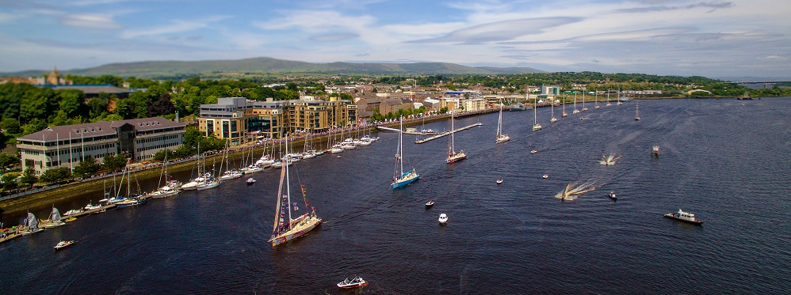

Welcome to the City of Derry
A city steeped in history, Derry has a lot to offer. From being the only remaining completely walled city in Ireland to being the UK's first City of Culture in 2013, there's plenty to see and do.
Below are some of the main landmarks that highlight Derry's rich history and are really worth a visit!